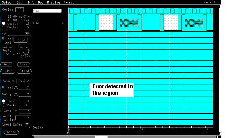
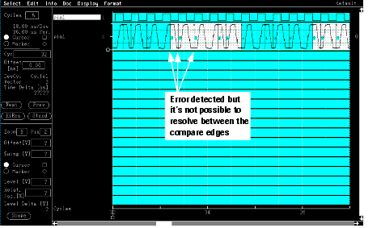
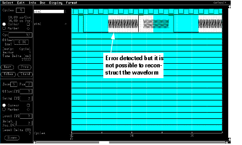
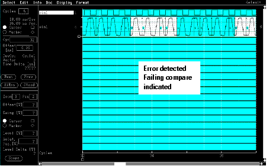
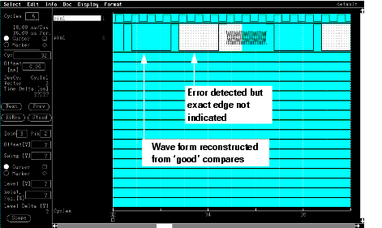

Display data for fine granularity results
When viewing the result data from tests that use fine granularity mode you must interpret the data slightly differently.
The following diagrams show data using the normal and high-res display modes (see the figures below).
Notice that the failure indication, a light colored shading, in the high-res mode display lasts for an entire device cycle period. That means it can extend from one cycle into the following cycle. This lets you easily find out on which edge the error was detected.





Functional changes
- Introduced before SmarTest 6.3.2